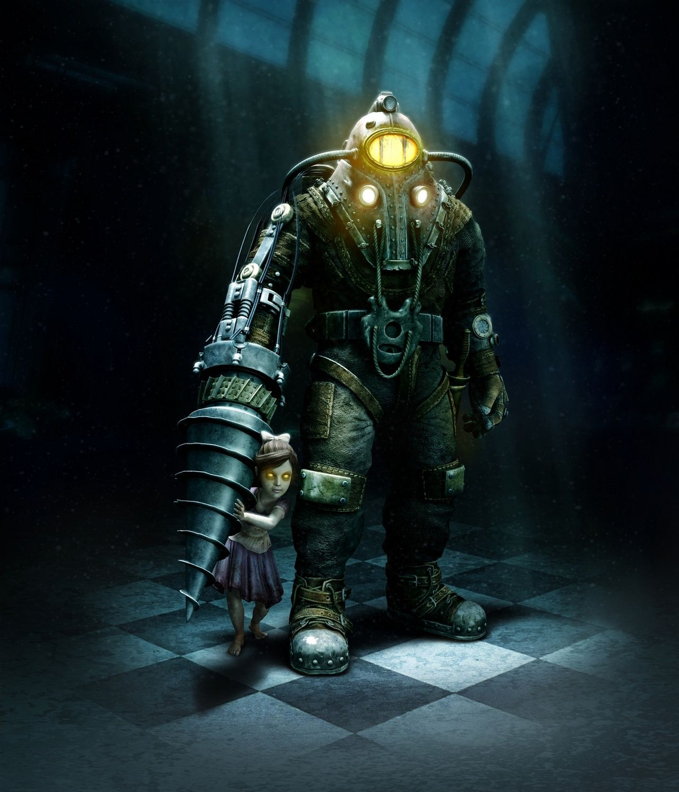

Bioshock


No Gods or Kings. Only Man.
BioShock is a retrofuturistic video game series created by Ken Levine, published by 2K Games and developed by several studios, including Irrational Games and 2K Marin. The BioShock games combine first-person shooter and role-playing elements, giving the player freedom for how to approach combat and other situations, and are considered part of the immersive sim genre. Additionally, the series is notable for exploring philosophical and moral concepts with a strong in-game narrative influenced by concepts such as objectivism, total utilitarianism, and American exceptionalism.